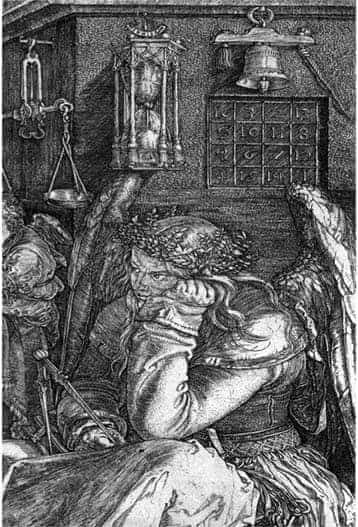

1.1. MELENCOLIA I
İnsanların kişiliklerini, mizaçlarını anlatmaya yönelik çalışmalar ortaçağ sanatının en temel konularından birini oluşturmuş, bu alanda pek çok yapıt ortaya konmuştur. Melankolik kişilik ve melankolik yaşam tarzı tüm ortaçağ boyunca olumsuz karşılanmış; hatta ölümcül bir günah –“acedia”– olarak tanımlanmıştır.
Melankolik insanların doğaüstü gizil güçler, cinler, şeytanlarla ilişkili oldukları düşünülmüş; bu insanlar tutuklanmış, işkence görmüş, yakılmış, öldürülmüştür.
Rönesans döneminde başlayan hümanist akımların etkisiyle melankolik insan mizacına yeni bir anlayışla bakılmaya başlanmıştır.
Bu yeni hümanist akımlar özellikle Floransalı filozoflar, tanrıbilimciler, düşünürler, sanatkârlar aracılığıyla geliştirilmiş ve dünyaya yayılmıştır. Melankolik insanın mizacı ve yaşam tarzı, ancak Rönesans hümanizmi içinde kendine bir yaşam alanı bulmaya başlamıştır.
Bu arada Nürnbergli bir Alman sanatkâr, Albrecht Dürer (1471-1528), bu hümanist gelişmelerin uzantısında yepyeni bir anlayışla, Melencolia I adlı ünlü gravürü yapmıştır.

Albrecht Dürer, Melencolia I, ayrıntı.
Albrecht Dürer’in bir melankoli monografisi kapsamındaki bu başyapıtı 1500 yıllarında dinbilimleri, felsefe, sanat, geometri-matematik, tanrı-erdem-günah vb. gibi konularda yapılan hesaplaşmaların tümünü kapsar niteliktedir.
Dürer’in, bir geometri teoremi, bir matematik denklemi gibi kurduğu bu gizemli evren, yapıldığı günden beri –beş yüz yıla yakın bir zamandır– kendisine bakan tüm yorumculara da yeni teoremler ve denklemler kurma olanağı sunmuştur. Başka bir deyişle, Dürer’in bu yapıtı sanat tarihinin bir sorunu olmuştur...
Yapıtın bir teorem, bir denklem kadar tamamlanmış gibi görünmesine karşın, yeni etkin eleştiriler ile sürekli olarak yeniden ve yeniden yorumlanabilecek kadar açık olduğu (da) görülür.
Daha somut: Bu gravür, 1514 yılından beri yapılan tüm yorumlama çabalarına karşın bir türlü tüketilememektedir... Her yorumcu kendi açılımını yapmakta, yorumlamakta son sözü söylediğini, son noktayı koyduğunu sanmakta... Ancak bu düşünce, yeni bir yorumcu ortaya çıkana değin sürmekte; o zaman yapıt üzerine o güne değin pek bir şey söylenmemiş olduğu, gravürün ilk günkü gizemini korumakta olduğu anlaşılmaktadır. Umberto Eco’nun söylemini yinelersek, bu son kerte açık yapıt, sonluluk içinde sonsuzluk, tamamlanmışlık içinde bir tamamlanmamışlık içermektedir. Bu yapıt Dürer’in, yorumculara emanet ettiği, tamamlanmış gibi görünen tam bir açık yapıt örneği sergilemektedir.1
Ben sanat tarihçisi değilim; bir Dürer araştırmacısı ya da uzmanı da değilim. Burada sadece, melankoli olgusunu anlamamızda vazgeçilmez niteliğini bugün de sürdüren bu görkemli melankoli bilmecesini beş yüz yıldır çözümlemeye çalışanların yazdıklarından, okuyabildiklerim içinden, ruhbilimsel açılımlara olanak verebilenlerden anlayabildiklerimi anlatmaya çalışmak istiyorum.2